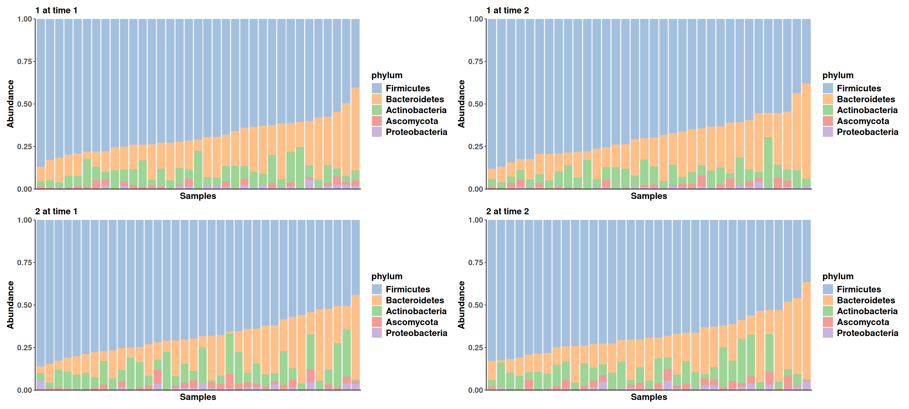
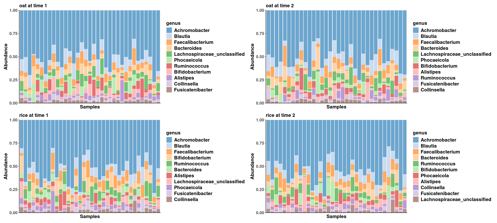
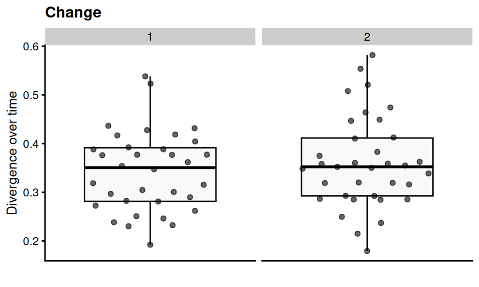
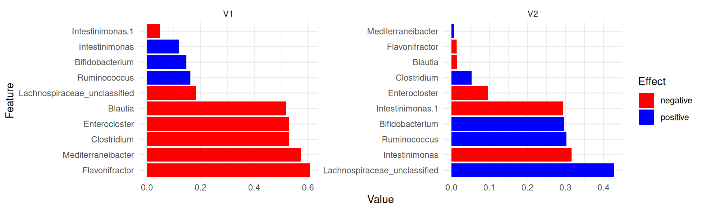
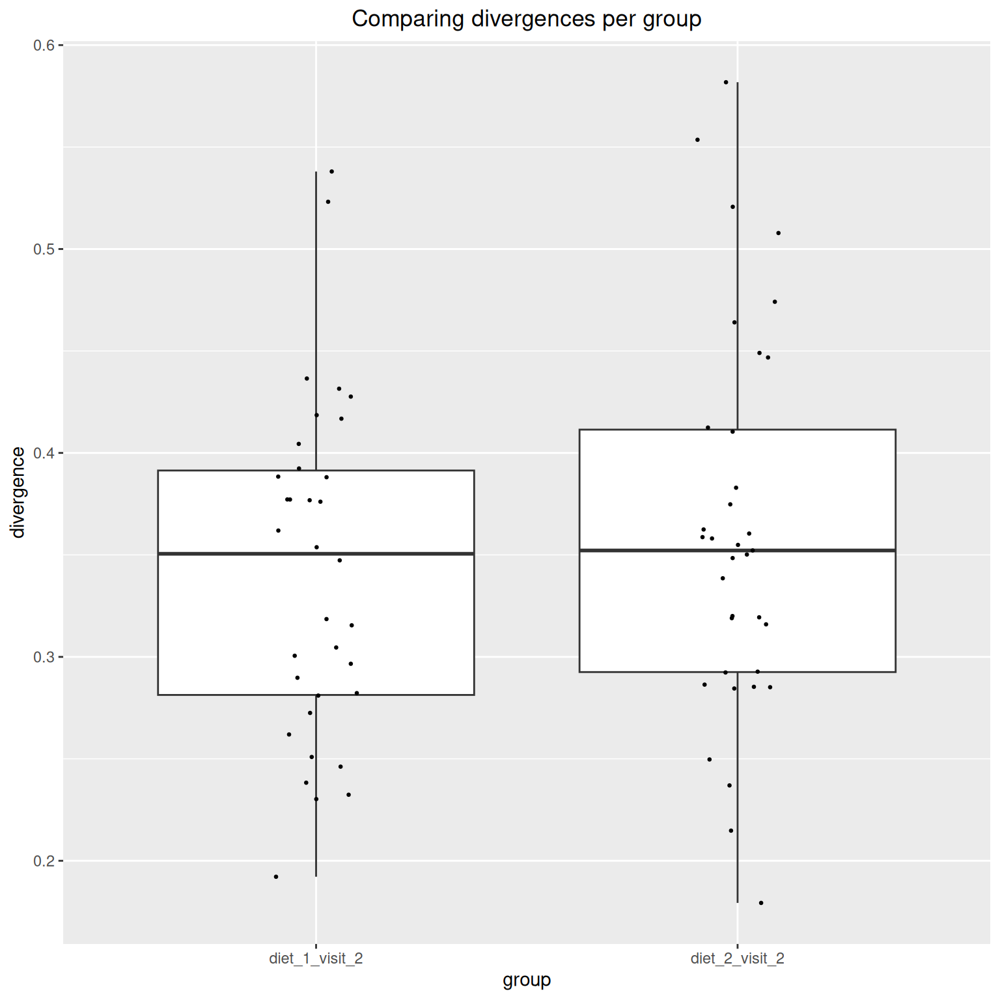

This document presents the results of a microbiota project, focusing on beta diversity analysis. Specifically, in this section, we employed Principal Coordinates Analysis (PCoA) to assess community dissimilarity among microbiota samples.





Dissimilarity index: bray
Group variable: diet
Interpretation
Homogeneity < 0.05: The assumption of homogeneity of variance is violated (i.e., the variances are significantly different across groups).
Homogeneity ≥ 0.05: The assumption of homogeneity of variance is not violated (i.e., the variances are similar across groups).

class: TreeSummarizedExperiment
dim: 1700 140
metadata(0):
assays(2): counts relabundance
rownames(1700): SGB4933 SGB4285 ... SGB15018 SGB4921
rowData names(9): kingdom phylum ... strain clade_name
colnames(140): AE1332 AE2332 ... VK1336 VK2336
colData names(17): sample id ... time_difference time_divergence
reducedDimNames(1): PCoA_BC
mainExpName: NULL
altExpNames(20): kingdom phylum ... KO metacyc
rowLinks: NULL
rowTree: NULL
colLinks: NULL
colTree: NULL